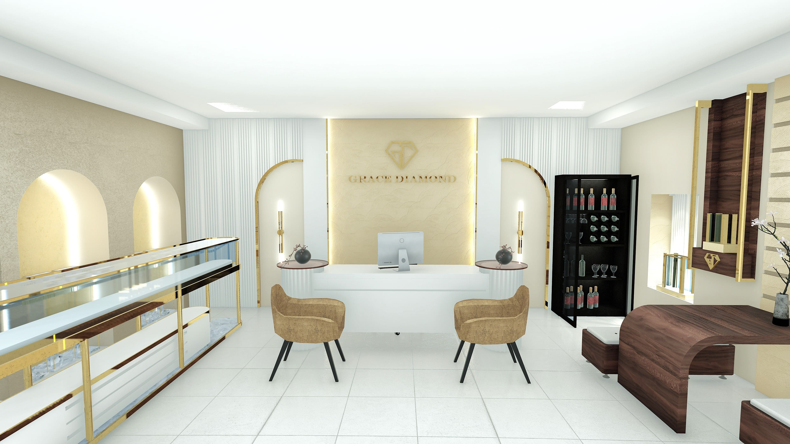
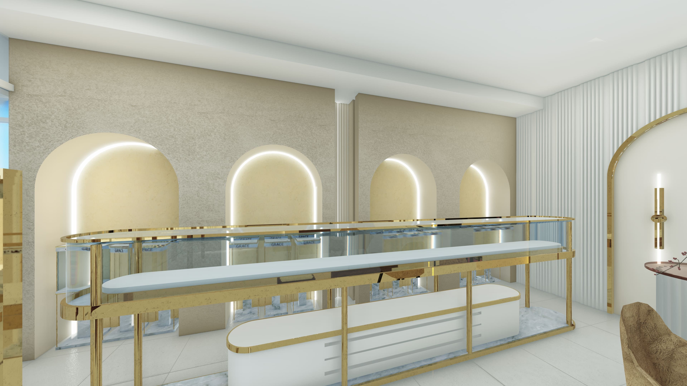

Grace Jewelry Shop
Luxury Retail Interior

Role: Interior Architect. The Project: A luxurious interior commission.
Client Need: A high-end commercial space that felt prestigious and welcoming, with a dedicated discussion lounge where clients could sit comfortably to view and discuss custom jewelry pieces.
Retail interiorCustom joineryClient lounge

